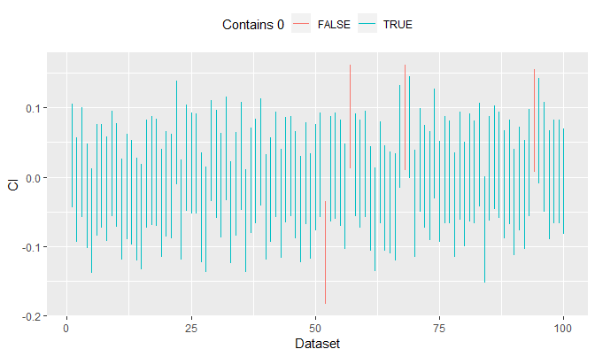
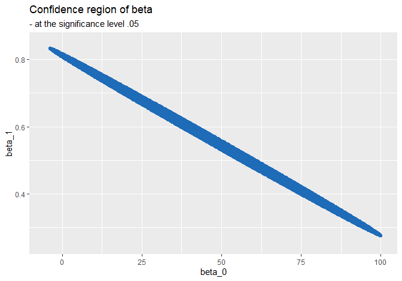
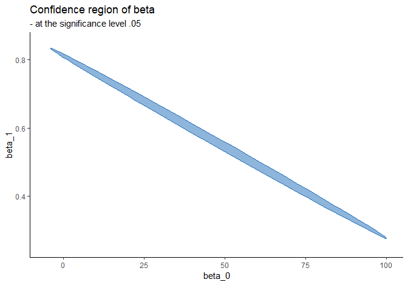

The following external R packages and data are used:
library(dplyr)
library(ggplot2)
ddply <- plyr::ddply
gather <- tidyr::gather
data(frets, package = 'boot')1. Introduction
In this document, different types of confidence regions will be visualized.
2. Visualizations
One purpose of this document is to understand what a 95% confidence interval is.
Case 1: confidence interval for \(\mu\)
Suppose \(X_i \stackrel{iid}{\sim} N(\mu, \sigma^2)\). One can onstruct a 95% confidence interval for \(\mu\) as: \[CI_{\mu, .95} = \Big(\overline{X} - \frac{S}{\sqrt{n}} t_{.975, n - 1}, \text{ } \overline{X} + \frac{S}{\sqrt{n}} t_{.975, n - 1}\Big)\] where \(S = \sqrt{S^2}\) and \(t_{.975, n - 1} = t^*\) is the value that satisfies \(P(T \leq t^*) = .975\), \(T \sim t_{n - 1}\). The meaning of \(P(\mu \in CI_{\mu, .95}) = .95\) is that the probability of the true parameter \(\mu\) being contained in this random interval \(CI_{\mu, .95}\) (i.e. interval constructed with random variables) is \(.95\), or \(95\%\).
If this CI is constructed with data and not random variables, then \(P(\mu \in CI_{\mu, .95}) = .95\) makes no sense because \(CI_{\mu, .95}\) is then a fixed interval. When using data: \[P(\mu \in CI_{\mu, .95}) = P \Big(\mu \in (\overline{x} - \frac{s}{\sqrt{n}} t_{.975, n - 1}, \text{ } \overline{x} + \frac{s}{\sqrt{n}} t_{.975, n - 1}) \Big) = I(\mu \in CI_{\mu, .95})\] since a constant \(\mu\) is either contained in \(CI_{\mu, .95}\) or not. The meaning of a 95% CI constructed with data is that if we replicate the same experiment or a data-generating process 100 times, and compute CIs in each replication in the same manner, then out of those 100, about 95 of them will contain the true parameter \(\mu\).
The plot below explains what this means. To simulate an unknown variance, I will use \(\sigma^2 = u\) where \(u\) is some sample generated from \(\text{Unif}(.5, 1.5)\):
set.seed(1024)
# Settings
conf_lvl <- .95
num_of_ci <- 100
n <- 1000
true_mean <- 0
true_var <- runif(1, .5, 5) # i.e. we don't know the true variance
# Collect lower and upper bounds of CI's
CI_collections <- NULL
t_star <- qt((1 + conf_lvl) / 2, df = n - 1)
for (i in 1:num_of_ci) {
X <- rnorm(n, mean = true_mean, sd = sqrt(true_var))
lower <- mean(X) - (sd(X) / sqrt(n)) * t_star
upper <- mean(X) + (sd(X) / sqrt(n)) * t_star
contains <- lower < true_mean && true_mean < upper
CI_collections <- rbind(CI_collections, c(lower, upper, contains))
}
# Plot CI's
CI_collections %>%
'colnames<-'(c('lower', 'upper', 'contains')) %>%
as_tibble() %>%
mutate(
CI_number = 1:num_of_ci,
contains = as.logical(contains)
) %>%
gather(key, value, -(CI_number:contains)) %>%
ggplot(aes(x = CI_number)) +
geom_line(aes(y = value, group = CI_number, col = contains)) +
labs(x = 'Dataset', y = 'CI') +
theme(legend.position = 'top') +
guides(col = guide_legend(title = 'Contains 0'))
100 replications are made. In each run, I generate 1000 random samples from \(N(0, \sigma^2 = u)\), compute \(CI_{\mu, .95}\), and see if it contains \(\mu = 0\). We see that out of 100 replications, 4 of them do not contain \(\mu = 0\), i.e. 96 out of 100 contain the true parameter.
Case 2: simple linear regression
Consider a simple linear regression with frets dataset: \[y = \beta_0 + \beta_1 x + \varepsilon\]
glimpse(frets)## Observations: 25
## Variables: 4
## $ l1 [3m[38;5;246m<dbl>[39m[23m 191, 195, 181, 183, 176, 208, 189, 197, 188, 192, 179, 183,...
## $ b1 [3m[38;5;246m<dbl>[39m[23m 155, 149, 148, 153, 144, 157, 150, 159, 152, 150, 158, 147,...
## $ l2 [3m[38;5;246m<dbl>[39m[23m 179, 201, 185, 188, 171, 192, 190, 189, 197, 187, 186, 174,...
## $ b2 [3m[38;5;246m<dbl>[39m[23m 145, 152, 149, 149, 142, 152, 149, 152, 159, 151, 148, 147,...The data consists of measurements of the length and breadth of the heads of pairs of adult brothers in 25 randomly sampled families. All measurements are expressed in millimetres. I will take \(x =\) l1 and \(y =\) b1. That is, I am asking: “Is there a linear relationship between the eldest son’s breadth and length of his head?”
X <- tibble(Int = rep(1, 25), l1 = frets[, 1]) %>% as.matrix()
Y <- frets[, 2]F-statistic gives a confidence region under \(H_0: \boldsymbol{\beta} = \mathbf{c}\) vs. \(H_1: \boldsymbol{\beta} \neq \mathbf{c}\): \[F = \frac{(\hat{\boldsymbol{\beta}} - \mathbf{c})^T(X^T X)(\hat{\boldsymbol{\beta}} - \mathbf{c})/k}{Y^T (I - H) Y / (n - k)} \sim F_{k, n - k}\] where, in our case, \(k = 2\) and \(n = 25\). A \(\gamma\)-level confidence region is the set of all \(\mathbf{c}\)’s where: \[F > F_{1 - \gamma} (k, n - k)\] Assume \(\gamma = .95\) and \(\mathbf{c} = \mathbf{0}\) for simplicity.
F_stat is a function that computes \(F\)-statistic:
F_stat <- function(X, Y, c, level = .95) {
n <- nrow(X)
k <- ncol(X)
if (missing(c)) {c <- rep(0, k)}
Betahat <- solve(t(X) %*% X, t(X) %*% Y)
I_n <- diag(1, n)
H <- X %*% solve(t(X) %*% X) %*% t(X)
numer <- t(Betahat - c) %*% (t(X) %*% X) %*% (Betahat - c) / k
denom <- (t(Y) %*% (I_n - H) %*% Y) / (n - k)
f_stat <- (numer / denom)[1, 1]
list(
c = c,
f_stat = f_stat, df1 = k, df2 = n - k,
p_val = pf(f_stat, df1 = k, df2 = n - k, lower = F)
)
}CI for each \(\beta_i\):
CIs <- function(X, Y, c, level = .95, has_intercept = T) {
n <- nrow(X)
k <- ncol(X)
if (missing(c)) {c <- rep(0, k)}
Betahat <- solve(t(X) %*% X, t(X) %*% Y)
I_n <- diag(1, n)
H <- X %*% solve(t(X) %*% X) %*% t(X)
CI <- matrix(rep(0, k * 2), ncol = 2)
for (i in 1:k) {
betahat_i <- Betahat[i, ]
se_i <- sqrt(
((t(Y) %*% (I_n - H) %*% Y) / (n - k)) *
solve(t(X) %*% X)[i, i]
)
t_star <- qt((1 + level) / 2, df = n - k)
CI[i, ] <- c(betahat_i - se_i * t_star, betahat_i + se_i * t_star)
}
colnames(CI) <- c('lower', 'upper')
if (has_intercept) {
rowname <- paste0('b', 0:(k - 1))
} else {
rowname <- paste0('b', 1:k)
}
rownames(CI) <- rowname
CI
}The CIs:
(cis <- CIs(X, Y))## lower upper
## b0 6.9732947 89.1933836
## b1 0.3337337 0.7758577x <- seq(floor(cis[1, 1]), ceiling(cis[1, 2]), by = .1)
y <- seq(.25, .8, by = .01)
# x <- seq(floor(cis[1, 1]), ceiling(cis[1, 2]), length = 10)
# y <- seq(floor(cis[2, 1]), ceiling(cis[2, 2]), length = 20)
F_stat_sep <- function(x, y) {
results <- lapply(
x,
function(xd) {
t(sapply(
y,
function(yd) {
result <- F_stat(X, Y, c(xd, yd))
c(result$c, result$p_val)
}
))
}
)
'colnames<-'(Reduce('rbind', results), c('b0', 'b1', 'p_val'))
}
results <- F_stat_sep(x, y)ggplot(
as_tibble(results),
aes(x = b0, y = b1, col = p_val > .05)
) +
geom_point() +
scale_colour_manual(values = c('transparent', 'blue')) +
labs(
x = 'beta_0', y = 'beta_1', title = 'Confidence region of beta',
subtitle = '- indicated by blue dots\n- at the significance level .05'
) +
theme(legend.position = 'none')
results2 <- as_tibble(results) %>%
mutate(cr = ifelse(p_val > .05, T, F))
find_hull <- function(df) {df[chull(df$b0, df$b1), ]}
hulls <- ddply(results2, "cr", find_hull)
plot <- ggplot(results2, aes(x = b0, y = b1, color = cr, fill = cr)) +
#geom_point() +
geom_polygon(data = hulls, alpha = .5) +
scale_colour_manual(values = c('transparent', 'blue')) +
scale_fill_manual(values = c('transparent', 'blue')) +
labs(
x = 'beta_0', y = 'beta_1', title = 'Confidence region of beta',
subtitle = '- indicated by blue dots\n- at the significance level .05'
) +
theme_classic() +
theme(legend.position = 'none')
plot
Case 3: Normal distribution
Session info
R session info:
sessionInfo()## R version 3.6.0 (2019-04-26)
## Platform: x86_64-w64-mingw32/x64 (64-bit)
## Running under: Windows >= 8 x64 (build 9200)
##
## Matrix products: default
##
## locale:
## [1] LC_COLLATE=English_Canada.1252 LC_CTYPE=English_Canada.1252
## [3] LC_MONETARY=English_Canada.1252 LC_NUMERIC=C
## [5] LC_TIME=English_Canada.1252
##
## attached base packages:
## [1] stats graphics grDevices utils datasets methods base
##
## other attached packages:
## [1] ggplot2_3.1.1 dplyr_0.8.1 reticulate_1.12 rmarkdown_1.12
##
## loaded via a namespace (and not attached):
## [1] Rcpp_1.0.1 pillar_1.4.0 compiler_3.6.0 plyr_1.8.4
## [5] prettydoc_0.2.1 tools_3.6.0 zeallot_0.1.0 digest_0.6.18
## [9] jsonlite_1.6 evaluate_0.13 tibble_2.1.1 gtable_0.3.0
## [13] lattice_0.20-38 png_0.1-7 pkgconfig_2.0.2 rlang_0.3.4
## [17] Matrix_1.2-17 cli_1.1.0 rstudioapi_0.10 yaml_2.2.0
## [21] xfun_0.7 ezknitr_0.6 withr_2.1.2 stringr_1.4.0
## [25] knitr_1.23 hms_0.4.2 vctrs_0.1.0 grid_3.6.0
## [29] tidyselect_0.2.5 glue_1.3.1 R6_2.4.0 fansi_0.4.0
## [33] readr_1.3.1 purrr_0.3.2 tidyr_0.8.3 magrittr_1.5
## [37] backports_1.1.4 scales_1.0.0 htmltools_0.3.6 assertthat_0.2.1
## [41] colorspace_1.4-1 labeling_0.3 utf8_1.1.4 stringi_1.4.3
## [45] lazyeval_0.2.2 munsell_0.5.0 crayon_1.3.4